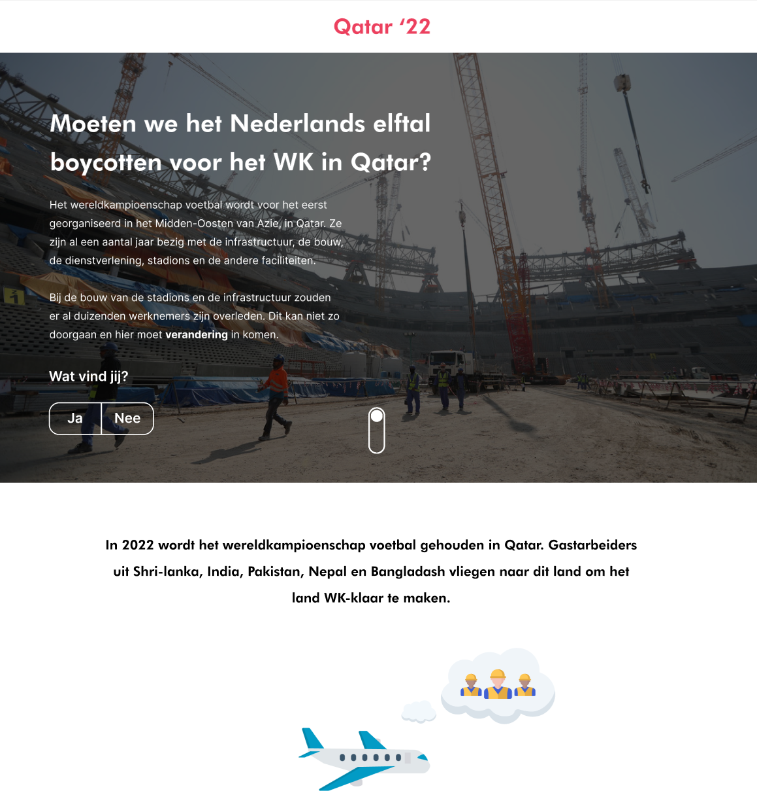
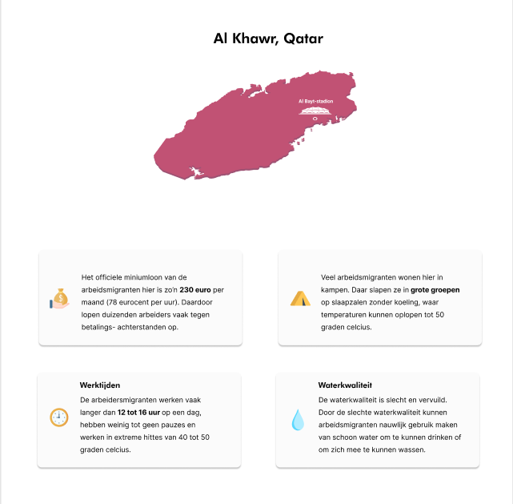
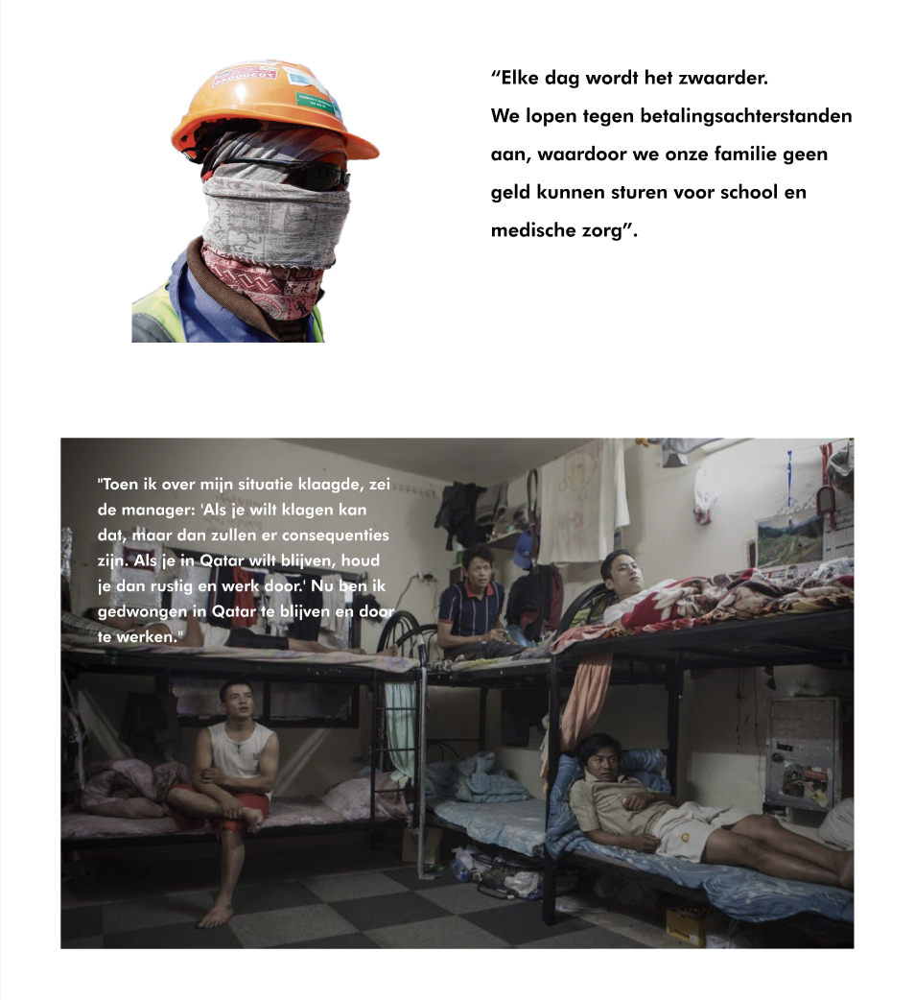

Meesterproef
Opdrachtomschrijving
Voor de meesterproef hebben ik en Tim Disseldorp de opdracht gekregen om een interface te maken voor een casus naar keuze. De casussen waar we uit kon kiezen: Tekst, Beeld, Audio en Video of een eigen artikel. Daarbij moeten wij nadenken over hoe we de interface willen ontwerpen. Willen wij er bijvoorbeeld een informatieve interface van maken of willen we het meer persoonlijk laten lijken? Dat is iets waar we een keuze in moet gaan maken.
Keuze concept
Wij hebben er voor gekozen om aan de slag te gaan met een eigen artikel. We hebben namelijk gemeenschappelijke interesses en willen graag iets kiezen wat actueel is en waar onze interesse naar toe gaat. We kwamen daarom op het idee om aan de slag te gaan met het onderwerp wat gerelateerd is aan een sport die wij uitoefenen. We hebben daarom voor het onderwerp: Misstanden die plaatsvinden bij de voorbereidingen van het wereldkampioenschap voetbal 2022 in Qatar gekozen.
Qatar, het gastland van het wk voetbal 2022 buidt arbeitsmigranten uit die werken aan de infrastructuur, in de bouw, de dienstverlening én aan stadions en andere faciliteiten voor het toernooi.
De arbeiders krijgen vaak andere werk dan wat is afgesproken, krijgen weinig salaris en hebben bijna onmogelijke werktijden.
Onze hoofdbron is Amnesty International.
Ontwerpkeuzes
Om juist verder op dat probleem in te spelen hebben wij een informatieve interface ontwikkeld waarbij voetbalfans meer informatie over deze misstanden kunnen lezen.
We hebben er voor gekozen om onze interface te ondersteunen met beeld en animaties om de informatie nog duidelijker op de gebruiker te laten overkomen. Daarnaast hebben we swipe gestures toegevoegd om de gebruiker duidelijk te maken welke acties er allemaal mogelijk zijn in onze interface(horizontaal en verticaal scrollen).
Als laatste wilden wij graag quotes toevoegen, zodat je als gebruiker meer in het gevoel van een arbeider kunt verplaatsen en snapt hoe zij zich voelen.


